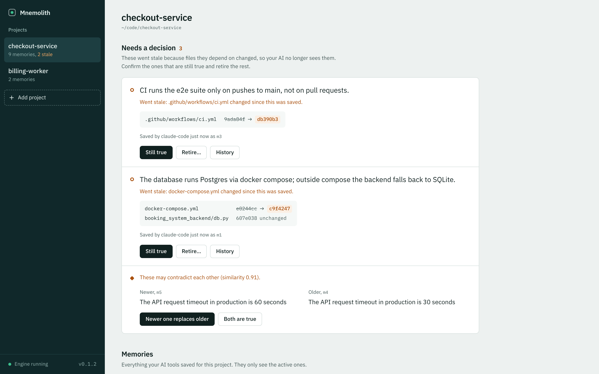

Memory that stays true to your code.
Shared memory for Claude Code, Cursor, and Codex. Linked to your files, and checked when the code changes.
> remember("The database runs Postgres via docker compose", files=["docker-compose.yml"])
m1Active
The database runs Postgres via docker compose
- CreatedClaude Code · session 01
An illustrative demo. Make a change and follow the memory.
See and fix what your AI remembers.
Run aether-cache ui to open your projects in the
browser. Memories whose files changed are waiting for a decision,
with the exact file versions side by side. Confirm the ones that are
still true, retire the rest, and settle facts that contradict each
other.

aether-cache ui
A little context.
A lot less repetition.
Move between Claude Code, Cursor, and Codex with the same project memory. Keep the decisions that still hold. Retire the ones that don’t.
Local by design. Open source from the start.